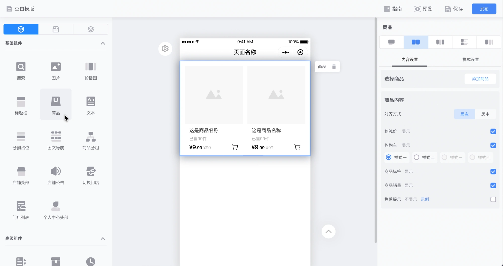
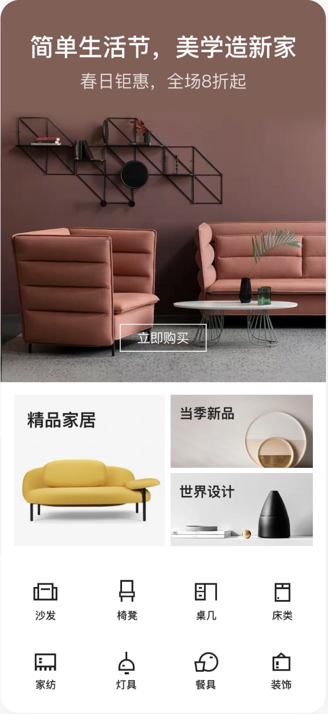
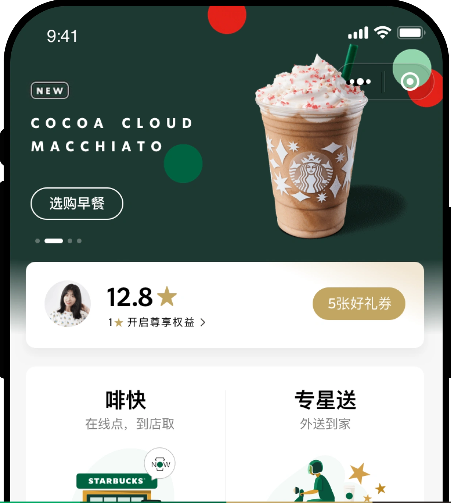

模板选择少
行业与经营场景不同，默认页面却难以体现差异。
WEIMOB / COMMERCE EXPERIENCE
2019 — 2021从标准化的商城组件，到有品牌个性的购物体验。
让同一套系统，支持不一样的生意。
统一底层规则
容纳万千表达


01 / MALL REVISION
微商城 C 端组件改版
把复杂的装修配置，转化为可理解、可组合、可复用的建站能力。
模板同质化、后台功能复杂、组件重复配置，最终让商家难以搭出自己的风格，也让消费者的浏览路径变得模糊。
行业与经营场景不同，默认页面却难以体现差异。
组件入口、导航和页面关联缺少一致的组织方式。
布局与信息层级依赖商家经验，商品表达参差不齐。
从商家反馈和配置路径出发，识别组件与模板的共性问题。
重构商品、直播、图文与导航等基础组件的分类和交互。
提供大、中、小等布局选项，让默认设置贴近常用场景。
把视觉、布局与配置规则形成可复用的组件能力。
通过组件分类、配置预览与导航关系的重组，降低搭建时的理解和操作成本。
商品信息保持清晰的骨架；内容、尺寸与布局服务于不同经营场景。
THE OUTCOME
新版装修上线后，原项目记录了行业模板使用的增长与编辑器流失率的下降。设计的价值，是让商家更容易找到适合自己业务的搭建方式。
02 / STARBUCKS
KA 定制 · 会员支付裂变
把支付后的分享入口，融入品牌与会员体验。

STARBUCKS / MEMBER EXPERIENCE三期以弹窗强化分享触达，四期引入「咖啡教室」的制作互动，让星享好礼、好友参与与奖励领取形成连贯体验。
支付后分享率提升 +15 个百分点
02.1 / FIND THE MOMENT
二期用户分享率仅有 8%，活动入口提示较弱，默认主视觉又依赖运营配置。这次优化同时关注分享参与、新会员获取、老会员促活与线上核销，并简化地址选择与活动链路。
二期主要依靠 Banner，用户是否进入活动取决于主动点击；三期改用弹窗强调利益点。
二期背景依赖市场配置；三期以星杯和星星建立默认主题，减少对运营素材的依赖。
加入额外奖励，优化地址信息补充，并在邀请好友页增加运营与会员引导能力。
02.2 / BEFORE & AFTER
交互与视觉同时发力：入口从弱提示变为强提示，活动页从通用配置背景变为贴合「星享好礼」的默认品牌主题。
突出活动利益点，在支付完成后引导用户进入活动。
以星杯与星星建立默认主视觉，减少运营配置依赖。
02.3 / FOUR WAYS IN
围绕用户的取餐、查看订单、支付完成与详情浏览场景增加活动曝光，让分享入口出现在更自然的位置。
在首页取餐场景曝光分享入口；画板同时指出分享图标层级较深，四期继续优化。
增加独立分享按钮，在查看订单的高频路径中提示参与。
用强提示突出星享好礼与额外福利，承接支付后的注意力。
通过悬浮按钮增加可见入口，吸引用户注意并进入分享。
超过 3 位好友领券→额外赠送 1 张券
02.4 / STAR GIFT EXPERIENCE
支付后弹窗、邀请好友页与奖励领取页构成三期的核心路径。将优惠券、好友领取进度和下一步操作集中呈现，明确参与的收益。
以星杯与星星的品牌视觉突出利益点，提供明确的参与操作。
在同一页面组织活动奖励、参与进度与好友领券记录。
用真实优惠券状态反馈参与结果，让奖励清晰可见。
好礼领完、领取优惠券与加入星会员，延续同一套信息与品牌表达。
02.5 / COFFEE CLASSROOM · PHASE IV
四期采用复古风格强化品牌调性，将活动奖励展现在页面上。点击「立即制作」后播放咖啡制作动效，再进入邀请好友页，让活动主题、玩法与利益点形成连续体验。
切换下方状态，查看真实项目中的制作与参与页面。
02.6 / KEEP IT ON BRAND
三期以星杯和星星贴合「星享好礼」主题；四期采用复古咖啡教室，突出新品宣传与制作玩法。品牌识别保持一致，视觉重心围绕每期活动变化。
A little coffee.
A lot to share.
用熟悉的品牌绿色与咖啡元素建立持续、一致的品牌感。
星杯与星星形成活动主题，减少默认背景对市场配置的依赖。
在页面中展示咖啡奖励，以制作互动与新品内容增加活动吸引力。
02.7 / DISCOVER · DEFINE · DEVELOP · DELIVER
先梳理触达和利益点的问题，再用交互与视觉共同推进优化。三期聚焦入口、默认主视觉与奖励机制，四期进一步丰富品牌内容和活动玩法。
从二期分享率与现有路径出发，梳理入口提示弱、利益点不突出的原因。
DISCOVERY明确提升分享参与、简化地址选择、增加邀请页运营能力的设计目标。
DEFINE强化入口与奖励表达，形成星享好礼与咖啡教室的品牌方案。
DEVELOP覆盖入口、活动页、领券、会员引导及四期制作与邀请页面。
DELIVER02.8 / MAKE THE CHANGE VISIBLE
围绕二期 8% 的用户分享率基线，三期扩展活动入口并增加奖励机制，四期引入咖啡制作互动，串联分享、拉新、促活与领券路径。
以原有分享表现界定优化问题
从单一入口扩展到四个参与触点
超过 3 位好友领券，额外赠送优惠券
从分享入口，到咖啡制作，
让用户看得见、愿意参与，也更清楚下一步。
03 / OFF-WHITE
品牌定制 · 移动购物体验
以 OFF-WHITE 的视觉语言为锚点，在通用组件能力之上建立独特的购物表达。
从黑白对比、字体与信息排布中建立品牌辨识度。
在成熟的商品与交易能力上，扩展皮肤和布局规则。
围绕浏览、规格选择、购物车与订单组织操作路径。
标题栏、SKU 选择与图片信息切换保持品牌语言；订单页将商品、交易与履约信息分层呈现。
覆盖首页、分类筛选、个人中心与商品详情。设计与品牌方、开发协同，将视觉规则延伸到交付方案。
04 / BEYOND THE INTERFACE
组件不是界面的终点。它们需要同时服务于商家的搭建效率、消费者的购物理解，以及品牌独有的表达方式。
用分类、默认选项和清晰的配置路径，减少每次搭建需要重新思考的问题。
一致的底层规则之上，为行业、内容和品牌提供恰当的灵活度。
让规范能被理解、组件能被复用、方案能被实现，形成持续生长的产品能力。
从发现市集，到看见报名进度。